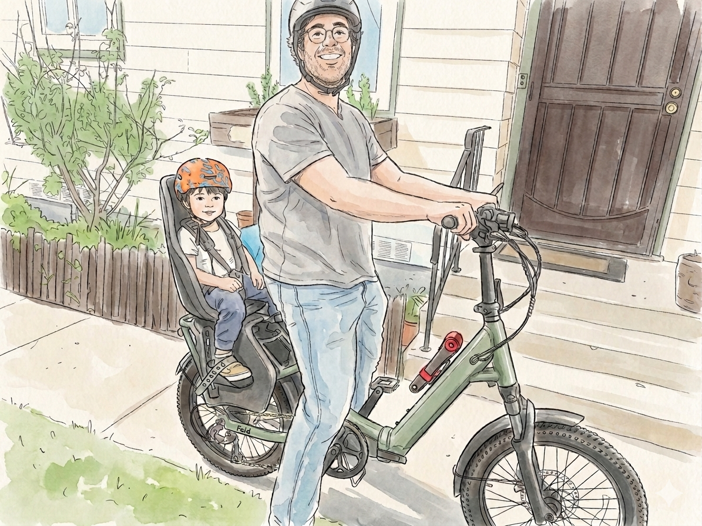

I'm Dan, a Product Designer by day and a dad, surfer, hiker, woodworker, and serial hobbyist by night.
I've worked as a designer creating ad campaigns for NHL and NBA teams, a Creative Director managing brands and marketing, and most recently as a Senior Product Designer for a large government application.
Creativity is just a part of who I am. Initially that interest manifested in photography. In high school you would likely find me setting up still life photo shoots in my basement. In college that interest morphed into graphic design and typography. This is when I really started taking an interest in how people were interacting with the world around them — not just what that world looked like. It was also when I coined the phrase that would get written on the first page of every notebook I've owned since 2010.
It's a phrase that's followed me throughout my career and personal life. I'm perpetually intrigued by the way things work, and the way people get around obstacles. In my day to day that manifests as user interviews and testing sessions, really diving deep into process and understanding peoples goals.
Humans are complex. There's so much more to experience design than the happy path. There's the frustration from the morning commute, the lack of sleep from the night before, the excitement about the after work event, the cough that's been lingering for months, and the newborn that you just can't stop thinking about...but keeps you up all night.
Design is about trying to understand the humanity of the situation, and providing an experience that works within the bounds of that paradigm. (Sorry for using paradigm)
That's all the serious stuff out of the way.
Outside of work you're likely to find me in the water surfing, on a bike ride with my kid, or 700 pages deep in a fantasy book.
